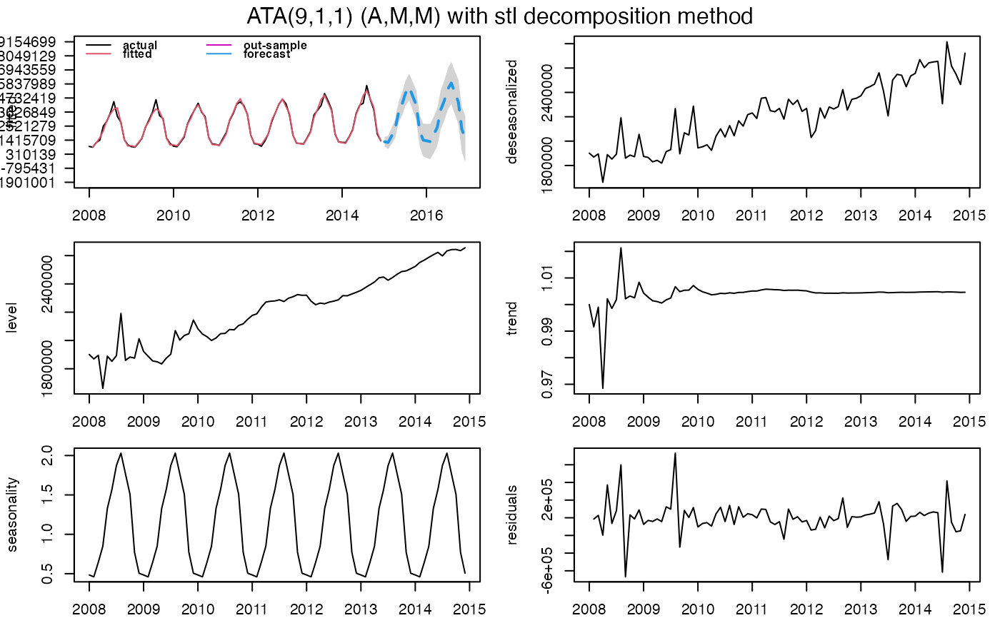

R/ATA.R
ATA.RdATA is a generic function for ATA Method forecasting from time series or time series models.
ATA( X, Y = NULL, parP = NULL, parQ = NULL, parPHI = NULL, model.type = NULL, seasonal.test = NULL, seasonal.model = NULL, seasonal.period = NULL, seasonal.type = NULL, seasonal.test.attr = NULL, find.period = NULL, accuracy.type = NULL, level.fixed = FALSE, trend.fixed = FALSE, trend.search = FALSE, h = NULL, partition.h = NULL, holdout = FALSE, holdout.adjustedP = TRUE, holdin = FALSE, transform.order = "before", transform.method = NULL, transform.attr = NULL, lambda = NULL, shift = NULL, initial.level = NULL, initial.trend = NULL, ci.level = 95, start.phi = NULL, end.phi = NULL, size.phi = NULL, negative.forecast = TRUE, print.out = TRUE, plot.out = TRUE )
| X | A numeric vector or time series of class |
|---|---|
| Y | A numeric vector or time series of class |
| parP | Value of Level parameter |
| parQ | Value of Trend parameter |
| parPHI | Value of Damping Trend parameter |
| model.type | An one-character string identifying method using the framework terminology. The letter "A" for additive model, the letter "M" for multiplicative model.
If NULL, both letters will be tried and the best model (according to the accuracy measure |
| seasonal.test | Testing for stationary and seasonality. If TRUE, the method firstly uses |
| seasonal.model | A string identifying method for seasonal decomposition. If NULL, "decomp" method is default. c("none", "decomp", "stl", "stlplus", "tbats", "stR") phrases of methods denote
|
| seasonal.period | Value(s) of seasonal periodicity. If NULL, |
| seasonal.type | An one-character string identifying method for the seasonal component framework. If NULL, "M" is default. The letter "A" for additive model, the letter "M" for multiplicative model.
If other seasonal decomposition method except |
| seasonal.test.attr | Attributes set for unit root, seasonality tests, X13ARIMA/SEATS and X11. If NULL, corrgram.tcrit=1.28, uroot.test="adf", suroot.test="correlogram", suroot.uroot=TRUE, uroot.type="trend", uroot.alpha=0.05, suroot.alpha=0.05, uroot.maxd=2, suroot.maxD=1, suroot.m=frequency(X), uroot.pkg="urca", multi.period="min", x13.estimate.maxiter=1500, x13.estimate.tol=1.0e-5, x11.estimate.maxiter=1500, x11.estimate.tol=1.0e-5. If you want to change, please use |
| find.period | Find seasonal period(s) automatically. If NULL, 0 is default. When
|
| accuracy.type | Accuracy measure for selection of the best model. IF NULL,
|
| level.fixed | If TRUE, "pStarQ" --> First, fits ATA(p,0) where p = p* is optimized for q=0. Then, fits ATA(p*,q) where q is optimized for p = p*. |
| trend.fixed | If TRUE, "pBullet" --> Fits ATA(p,1) where p = p* is optimized for q = 1. |
| trend.search | If TRUE, "qBullet" --> Fits ATA(p,q) where p = p* is optimized for q = q* (q > 0). Then, fits ATA(p*,q) where q is optimized for p = p*. |
| h | The number of steps to forecast ahead.
When the parameter is NULL; if the frequency of |
| partition.h | If |
| holdout | Default is FALSE. If TRUE, ATA Method uses the holdout forecasting for accuracy measure to select the best model. In holdout forecasting, the last few data points are removed from the data series. The remaining historical data series is called in-sample data (training set), and the holdout data is called out-of-sample data (holdout set). If TRUE, partition.h will used for holdout data. |
| holdout.adjustedP | Default is TRUE. If TRUE, parP will be adjusted by length of training - validation sets and in-sample set when the holdout forecasting is active. |
| holdin | Default is FALSE. If TRUE, ATA Method uses the hold-in forecasting for accuracy measure to select the best model. In hold-in forecasting, the last h-length data points are used for accuracy measure. |
| transform.order | If "before", Box-Cox transformation family will be applied and then seasonal decomposition techniques will be applied. If "after", seasonal decomposition techniques will be applied and then Box-Cox transformation family will be applied. |
| transform.method | Transformation method --> BoxCox, BoxCox Shift, Modulus, Bickel-Doksum, Dual, Yeo-Johnson, GPower, GLog, Log, Log Shift.
When Box-Cox power transformation family is specified, |
| transform.attr | Attributes set for Box-Cox transformation. If NULL, bcMethod = "loglik", bcLower = 0, bcUpper = 1, bcBiasAdj = FALSE. If you want to change, please use |
| lambda | Box-Cox power transformation family parameter. If NULL, data transformed before model is estimated. |
| shift | Box-Cox power transformation family shifting parameter. If NULL, data transformed before model is estimated.
When |
| initial.level | If NULL, FALSE is default. If FALSE, ATA Method calculates the pth observation in |
| initial.trend | If NULL, FALSE is default. If FALSE, ATA Method calculates the qth observation in |
| ci.level | Confidence Interval levels for forecasting. |
| start.phi | Lower boundary for searching |
| end.phi | Upper boundary for searching |
| size.phi | Increment step for searching |
| negative.forecast | Negative values are allowed for forecasting. Default value is TRUE. If FALSE, all negative values for forecasting are set to 0. |
| print.out | Default is TRUE. If FALSE, summary of ATA Method is not shown. |
| plot.out | Default is TRUE. If FALSE, graphics of ATA Method are not shown. |
Returns an object of class ATA. The generic accessor functions ATA.Forecast and ATA.Accuracy extract useful features of the value returned by ATA and associated functions.
ATA object is a list containing at least the following elements
actual : The original time series.
fitted : Fitted values (one-step forecasts). The mean is of the fitted values is calculated over the ensemble.
level : Estimated level values.
trend : Estimated trend values.
residuals : Original values minus fitted values.
coefp : The weights attached to level observations.
coefq : The weights attached to trend observations.
p : Optimum level parameter.
q : Optimum trend parameter.
phi : Optimum damped trend parameter.
model.type: Form of trend.
h : The number of steps to forecast ahead.
forecast : Point forecasts as a time series.
out.sample: Test values as a time series.
method : The name of the optimum forecasting method as a character string.
initial.level : Selected initial level values for the time series forecasting method.
initial.trend : Selected initial trend values for the time series forecasting method.
level.fixed : A choice of optional level-fixed trended methods.
trend.fixed : A choice of optional trend-fixed trended methods.
trend.search : A choice of optional trend and level optimized trended methods if q > 1.
transform.method : Box-Cox power transformation family method --> BoxCox, BoxCox Shift, Modulus, Bickel-Doksum, Dual, Yeo-Johnson, GPower, GLog, Log, Log Shift.
transform.order : Define how to apply Box-Cox power transformation techniques, before or after seasonal decomposition.
lambda : Box-Cox power transformation family parameter.
shift : Box-Cox power transformation family shifting parameter.
accuracy.type : Accuracy measure that is chosen for model selection.
accuracy : In and out sample accuracy measures and its descriptives that are calculated for optimum model are given.
holdout : Holdout forecasting is TRUE or FALSE.
holdout.training : Training set in holdout forecasting.
holdout.validation: Validation set in holdout forecasting.
holdout.forecast : Holdout forecast.
holdout.accuracy : Accuracy measure chosen for model selection in holdout forecasting.
holdin : Hold-in forecasting is TRUE or FALSE.
is.season : Indicates whether it contains seasonal pattern.
seasonal.model : The name of the selected decomposition method.
seasonal.type : Form of seasonality.
seasonal.period : The number of seasonality periods.
seasonal.index : Weights of seasonality.
seasonal : Estimated seasonal values.
seasonal.adjusted : Deseasonalized time series values.
execution.time : The real and CPU time 'in seconds' spent by the system executing that task, including the time spent executing run-time or system services on its behalf.
calculation.time : How much real time 'in seconds' the currently running R process has already taken.
Yapar, G., (2016) "Modified simple exponential smoothing" Hacettepe University Journal of Mathematics and Statistics Early Access. Doi:10.15672/HJMS.201614320580
Yapar, G., Capar, S., Selamlar, H. T., Yavuz, I., (2016) "Modified holt's linear trend method" Hacettepe University Journal of Mathematics and Statistics Early Access. Doi: 10.15672/HJMS.2017.493
Ali Sabri Taylan and Hanife Taylan Selamlar
#> ATA(2,2,1) #> #> model.type: M #> #> seasonal.model: stl #> #> seasonal.type: M #> #> forecast horizon: 18 #> #> accuracy.type: sMAPE #> #> In-Sample Accuracy Measures: #> #> MAE MSE RMSE MPE MAPE #> 1.104111e+05 3.052991e+10 1.747281e+05 -4.107000e-01 4.268832e+00 #> sMAPE MASE OWA #> 4.261812e+00 6.883950e-01 1.500000e-05 #> #> In-Sample Accuracy Measures: #> #> MdAE MdSE RMdSE MdPE MdAPE sMdAPE #> 6.276038e+04 3.938865e+09 6.276038e+04 3.065340e-01 2.926998e+00 2.970471e+00 #> #> Out-Sample Accuracy Measures: #> #> MAE MSE RMSE MPE MAPE sMAPE MASE OWA #> NA NA NA NA NA NA NA NA #> #> Out-Sample Accuracy Measures: #> #> MdAE MdSE RMdSE MdPE MdAPE sMdAPE #> NA NA NA NA NA NA #> #> #> user system elapsed #> 8.25 0.00 8.26 #> #> calculation.time: 8.2701 #> #> #> Forecasts: #> Jan Feb Mar Apr May Jun Jul Aug Sep #> 2015 1296249 1236871 1743369 2307767 3626365 4297325 5160210 5619674 4913657 #> 2016 1369388 1306660 1841737 2437980 3830978 4539797 #> Oct Nov Dec #> 2015 4206777 2164477 1424926 #> 2016 #> #>#> ATA(2,2,1) #> #> model.type: M #> #> seasonal.model: stl #> #> seasonal.type: M #> #> forecast horizon: 18 #> #> accuracy.type: sMAPE #> #> In-Sample Accuracy Measures: #> #> MAE MSE RMSE MPE MAPE #> 1.104111e+05 3.052991e+10 1.747281e+05 -4.107000e-01 4.268832e+00 #> sMAPE MASE OWA #> 4.261812e+00 6.883950e-01 1.500000e-05 #> #> In-Sample Accuracy Measures: #> #> MdAE MdSE RMdSE MdPE MdAPE sMdAPE #> 6.276038e+04 3.938865e+09 6.276038e+04 3.065340e-01 2.926998e+00 2.970471e+00 #> #> Out-Sample Accuracy Measures: #> #> MAE MSE RMSE MPE MAPE sMAPE #> 3.827829e+06 1.755212e+13 4.189525e+06 9.999997e+01 9.999997e+01 1.999999e+02 #> MASE OWA #> 2.324255e+01 6.890000e-04 #> #> Out-Sample Accuracy Measures: #> #> MdAE MdSE RMdSE MdPE MdAPE sMdAPE #> 4.062352e+06 1.655566e+13 4.068864e+06 9.999998e+01 9.999998e+01 1.999999e+02 #> #> #> user system elapsed #> 8.25 0.00 8.26 #> #> calculation.time: 8.2701 #> #> #> Forecasts: #> Jan Feb Mar Apr May Jun Jul #> 2015 0.9984418 0.9999914 1.0000000 1.0000000 1.0000000 1.0000000 1.0000000 #> 2016 1.0000000 1.0000000 1.0000000 1.0000000 1.0000000 1.0000000 #> Aug Sep Oct Nov Dec #> 2015 1.0000000 1.0000000 1.0000000 1.0000000 1.0000000 #> 2016 #> #>